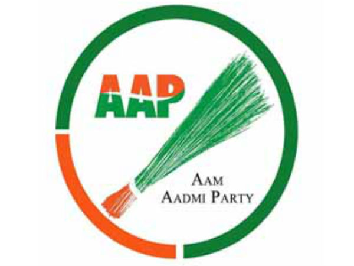
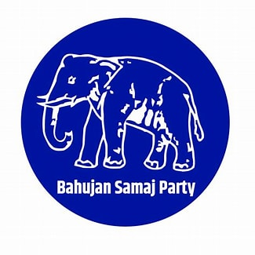
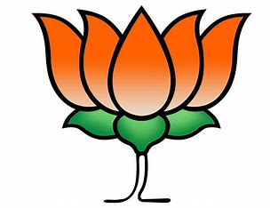
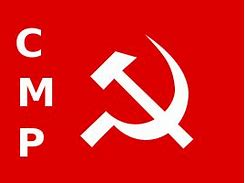
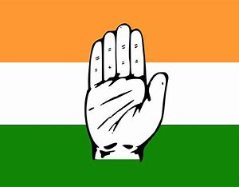

Aam Aadmi Party
Aam Aadmi Party is a political party in India, founded in November 2012 by Arvind Kejriwal and his companions. It is currently the ruling party of two governments: Delhi, the capital territory of India, and the state of Punjab. Presently, there is one Aam Aadmi Party MP in Lok Sabha, Sushil Kumar Rinku who was elected in a Bypoll from Jalandhar.
Bahujan Samaj Party
TThe BSP has its main base in the Indian state of Uttar Pradesh where it was the second-largest party in the 2019 Indian general election with 19.3% of votes and fourth largest in the 2022 Uttar Pradesh Legislative Assembly election with 12.88% of votes.Its election symbol is an elephant which is the same symbol historically used by Dr. Ambedkar's Scheduled Castes Federation.
Bharatiya Janata Party
The Bharatiya Janata Party is a political party in India and one of the two major Indian political parties alongside the Indian National Congress.Since 2014, it has been the ruling political party in India under the incumbent Prime Minister Narendra Modi.
Communist Party Of India(Marxist)
The Communist Party of India (Marxist) was an Indian communist party formed by the All India Coordination Committee of Communist Revolutionaries (AICCCR) at a congress in Calcutta in 1969. The foundation of the party was declared by Kanu Sanyal at a mass meeting in Calcutta on 22 April, Vladimir Lenin 's birthday.
Indian National Congress
The Indian National Congress was founded by Allan Octavian Hume, Dadabhai Naoroji, and Dinshaw Edulji Wacha1. It was established on December 28, 1885, and played a crucial role in the Indian independence movement against British rule.
National People's Party
The National People's Party is a national-level political party in India, though its influence is mostly concentrated in the state of Meghalaya. The party was founded by P. A. Sangma after his expulsion from the NCP in July 2012. It was accorded national party status on 7 June 2019. It is the first political party from Northeastern India to have attained this status.